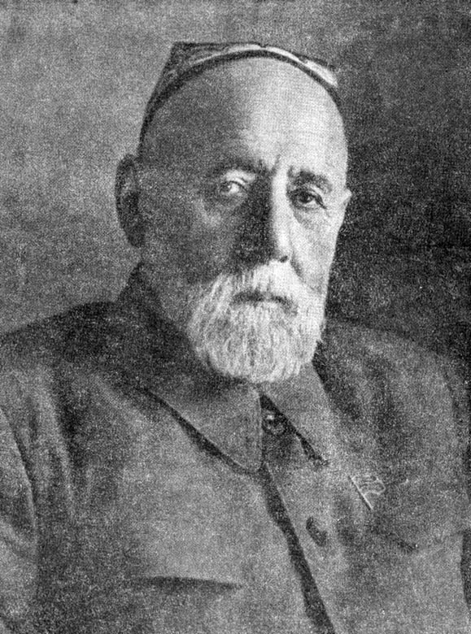

Асосгузори адабиёти муосири тоҷик

Садриддин Айнӣ (1878–1954) — асосгузори адабиёти муосири тоҷик ва яке аз бузургтарин нависандагони миллат мебошад. Ӯ дар Бухоро ба дунё омада, тамоми ҳаёташро ба рушди илму адаб бахшидааст. Айнӣ бо асарҳои худ зидди ҷаҳолат ва беадолатӣ мубориза бурда, мардумро ба дониш, маърифат ва худшиносӣ даъват мекард. Осори ӯ то имрӯз аҳамияти бузурги фарҳангӣ дорад.
Биёед, эй рафиқон, дарс хонем,
Ба бекорию нодонӣ намонем,
Ба олам ҳар касе бекор гардад,
Ба чашми аҳли олам хор гардад.
Дил ба дилдор асту ман афтода аз дилдор дур,
Фаррух он рӯзе, ки ҳам дилдору ҳам дил доштам,
Мекушад ин ҳасратам охир, ки боре ӯ нагуфт,
Айнии маҳҷур,яъне зору бедил доштам.